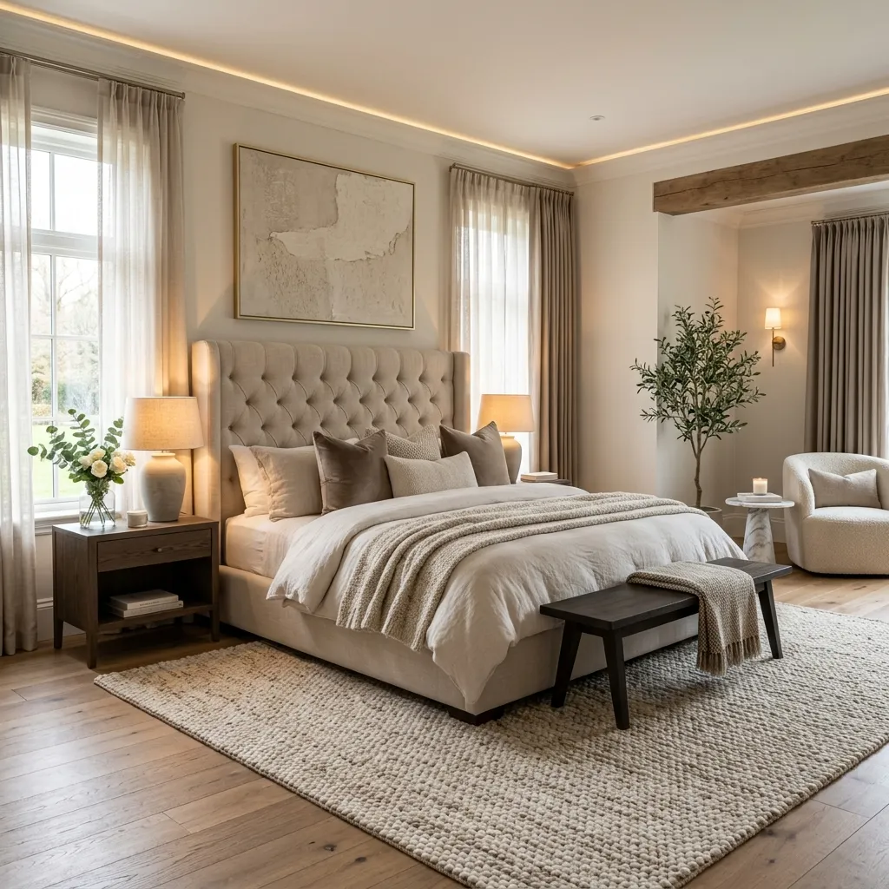
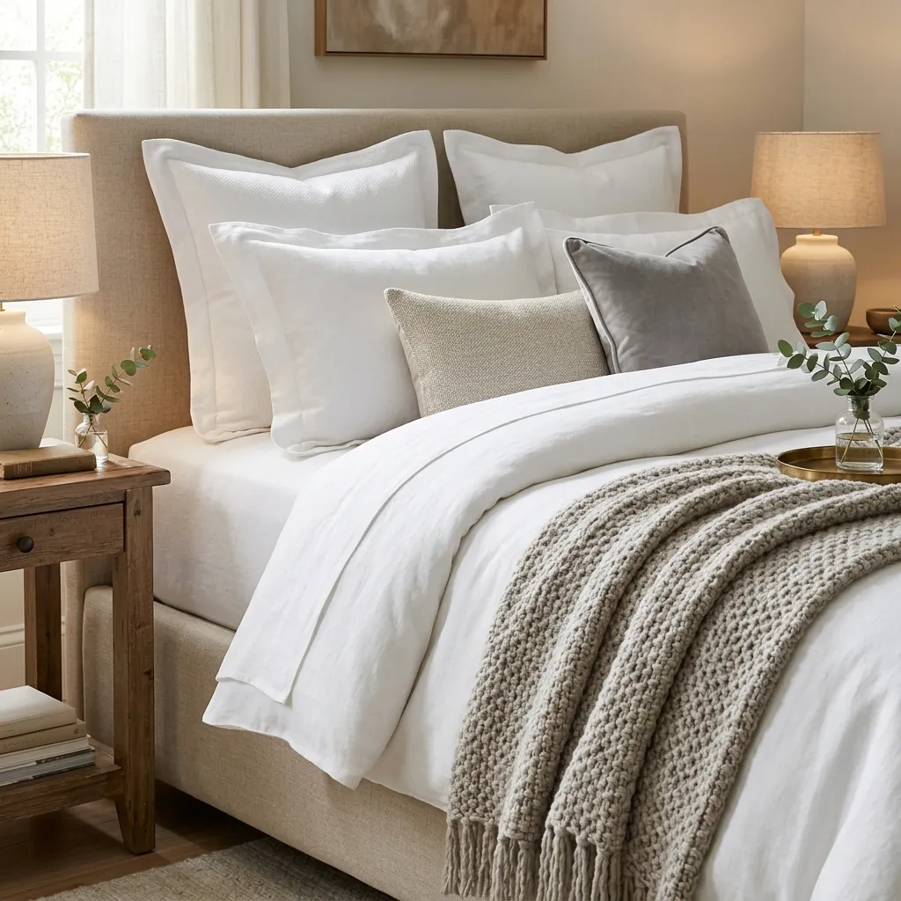
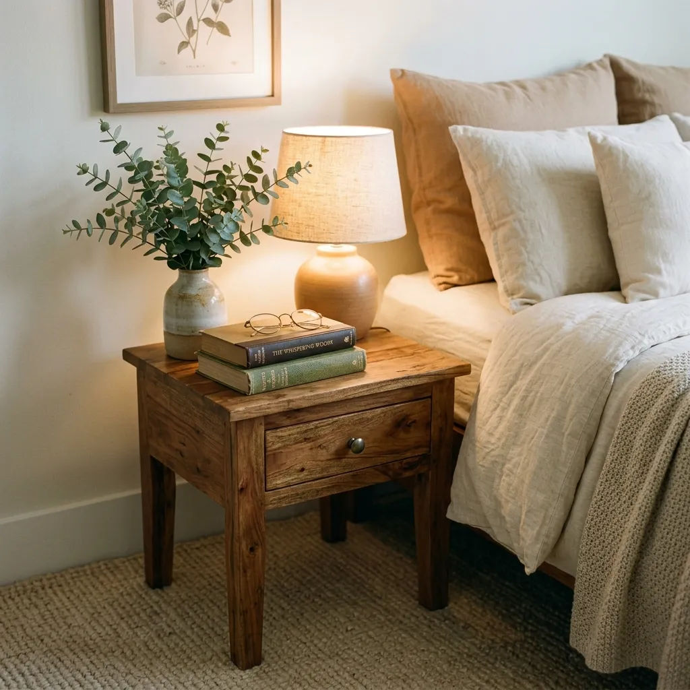

The Ultimate Guide to Bedroom Setup: Creating a Chic and Restful Sanctuary
We spend approximately one-third of our lives sleeping, which means we spend a massive portion of our lives in our bedrooms. Yet, when it comes to interior design and room setup, the bedroom is often the last place to receive attention. We pour our energy and budgets into the living room and kitchen because those are the spaces our guests see. The bedroom, hidden away behind a closed door, often becomes a dumping ground for clean laundry, half-read books, and mismatched furniture.
It is time to change that narrative. Your bedroom should not just be a room with a bed in it; it should be a carefully curated sanctuary. It should be a space that physically lowers your heart rate the moment you step inside, blending supreme comfort with chic, elevated aesthetics.
Setting up a bedroom from scratch—or completely overhauling your current one—can feel daunting. Where exactly should the bed go? How big should the rug be? Do you really need wall sconces? In this ultimate room setup guide, we are going to break down the exact formula for creating a master bedroom that feels like a luxury boutique hotel, tailored entirely to your personal style.

Step 1: Nailing the Bedroom Layout
Before you even think about buying a new throw blanket or picking a paint color, you must master the layout. The flow of the room dictates how functional and relaxing it will be. Even the most expensive furniture will look terrible if it is crammed into a corner awkwardly.
The Command Position
Interior designers often borrow a core principle from Feng Shui known as the "Command Position." In a bedroom, the bed is the most important piece of furniture, and it should dictate the layout. Ideally, your bed should be placed so that when you are lying in it, you have a clear view of the bedroom door without being directly in line with it. This psychological positioning gives you a subconscious sense of safety and control over your environment, leading to better sleep.
Dealing with Windows and Doors
What if your room has an awkward layout with multiple doors, closets, and large windows?
- The Golden Rule: Try your hardest never to place your bed on the same wall as the door you use to enter the room.
- Windows: Placing a bed under a window is a highly debated topic in interior design. If you have a solid, beautifully upholstered headboard and heavy curtains, placing the bed in front of a window can actually look incredibly chic and anchor the room. However, if you live in a cold climate or have drafty windows, it is best avoided for comfort reasons.
The Clearances
A room feels cramped when you have to squeeze past furniture to get to the bathroom. You need "breathing room."
- Leave at least 30 to 36 inches of clear walking space on both sides of the bed and at the foot of the bed.
- If you have dresser drawers that need to pull out, ensure you have at least 3 feet of clearance in front of the dresser so you can comfortably stand and open them.
Step 2: The Bed – Your Room's Focal Point
Since it is called a "bedroom," it is no surprise that the bed is the undeniable focal point of the space. It is the visual anchor. If the bed looks uninviting or disproportionate, the entire room setup will fail.
Choosing the Right Frame and Headboard
Your bed frame sets the design tone for the rest of the room.
- Upholstered Beds: If you want a soft, luxurious, and cozy vibe, opt for a fully upholstered bed in linen, boucle, or velvet. It softens the hard architectural lines of the room.
- Wood Frames: For a minimalist, mid-century modern, or organic modern look, a solid wood frame (like walnut or light oak) adds warmth and natural texture.
- Metal Frames: A sleek, matte black metal canopy bed adds instant drama and draws the eye upward, making it perfect for rooms with high ceilings.

The Art of Layering Bedding
Have you ever wondered why hotel beds look so incredibly plush and inviting? It is all about layering. A single flat comforter thrown over a mattress will always look dorm-like. To achieve a chic, expensive look, follow this layering formula:
- The Base: High-quality, breathable sheets. Crisp white percale cotton or soft, washed linen are the gold standards.
- The Middle: A lightweight quilt or coverlet tucked tightly around the mattress for a clean, tailored look.
- The Top: A fluffy duvet (stuffed with an oversized insert for maximum fluffiness). Fold the duvet in half and lay it at the foot of the bed so the quilt beneath is exposed.
- The Throw: A textured throw blanket (chunky knit or faux fur) draped casually over the corner of the folded duvet.
The Throw Pillow Formula
You do not need 15 throw pillows that you have to toss onto the floor every night, but you do need some structure.
- For a Queen Bed: Two standard sleeping pillows leaning against the headboard, two 20x20 inch decorative pillows in front of them, and one long lumbar pillow in the front center.
- For a King Bed: Three European square shams (26x26 inches) in the back, two King-sized sleeping pillows in front, and one extra-long lumbar pillow in the front.
Step 3: Mastering Bedroom Lighting
Lighting is the secret weapon of interior design. If you rely solely on the overhead light fixture (often jokingly referred to as "the big light"), your bedroom will feel stark, harsh, and entirely unromantic. A chic bedroom setup requires layered lighting.
Ambient Lighting: Setting the Mood
Your bedroom needs soft, glowing light that tells your brain it is time to wind down.
- Table Lamps: A matching set of substantial table lamps on your nightstands is a classic choice. Ensure the lamps are tall enough; the bottom of the lampshade should roughly align with your shoulder height when you are sitting up in bed reading.
- Wall Sconces: If your nightstands are small or you simply prefer a cleaner, more hotel-inspired aesthetic, install wall sconces on either side of the headboard. Plug-in sconces are a fantastic, budget-friendly alternative if you don't want to hire an electrician to hardwire them.
Task Lighting and Accent Lighting
If you read in bed, you need directional task lighting. Some sconces come with a small, adjustable reading arm, which is the perfect fusion of ambient and task lighting. Additionally, consider a floor lamp in the corner next to an accent chair, or a small, low-wattage lamp on top of your dresser to create a warm pocket of light across the room.
The Importance of Color Temperature
PRO TIP
Never use "Daylight" or "Cool White" bulbs in a bedroom. They mimic the midday sun and suppress melatonin production. Always choose "Warm White" bulbs, specifically between 2700K and 3000K. This emits a soft, amber glow that is highly flattering and deeply relaxing. Furthermore, install dimmer switches on every light fixture possible.
Step 4: Grounding the Space with Rugs
Even if your bedroom is fully carpeted, adding an area rug is a crucial step in the setup process. A rug anchors the bed, adds a massive layer of texture, and introduces a color palette to the room.
Getting the Size Right
The most common mistake people make in bedroom setup is buying a rug that is far too small. A tiny rug floating at the foot of the bed looks disconnected and cheap.
- For a Queen Bed: The absolute minimum size is 8x10 feet.
- For a King Bed: You need a 9x12 foot rug to properly anchor the massive scale of the bed.
Placement Rules
Do not shove the rug all the way against the wall behind the headboard. The nightstands do not need to sit on the rug. Instead, place the rug perpendicular to the bed. Start the rug about two-thirds of the way down the bed (just in front of the nightstands). This ensures that when you swing your legs out of bed in the morning, your feet land on a soft, warm surface rather than a cold floor, and the rug extends generously past the foot and sides of the bed.
Choosing the Texture
Since the bedroom is a low-traffic area where you are often barefoot, prioritize supreme softness. Vintage Persian rugs add beautiful, faded character; plush Moroccan Berber rugs offer incredible underfoot comfort; and natural jute rugs bring an earthy, organic, coastal vibe (though they are less soft).
Step 5: Curtains and Window Treatments
Window treatments in a bedroom have a dual purpose: they must block out the morning sun to ensure you get a good night's sleep, but they must also look incredibly elegant and soft.
The Blackout Solution
If you are sensitive to light, blackout lining is non-negotiable. However, standard blackout curtains can sometimes look stiff and plasticky. The chicest solution is a layered approach:
- Install woven wood or bamboo blackout roller shades inside the window frame. These block the light perfectly and look clean and modern.
- Then, hang unlined, beautiful linen or velvet drapes on the outside of the window frame to add softness and frame the window.
The "High and Wide" Rule
To make your bedroom look grand and your ceilings look exceptionally high, never hang the curtain rod right on top of the window trim. Mount the curtain rod 4 to 6 inches above the window frame (or even closer to the ceiling). Extend the rod 8 to 12 inches past the edges of the window on both sides. When the curtains are open, they should rest against the wall, not blocking the glass, making the window look significantly larger than it actually is. Finally, ensure your curtains "kiss" the floor. Curtains that hover an inch above the floor look like pants that are too short.
Step 6: Functional Decor and Storage
A chic bedroom is a clean bedroom. Visual clutter creates mental clutter, which is the enemy of relaxation. Your room setup must include strategic storage solutions and thoughtful decor.

Nightstand Styling
Your nightstand is prime real estate. Avoid turning it into a dumping ground for water glasses, receipts, and tangled phone chargers.
- Choose nightstands with at least one drawer to hide the ugly necessities (chargers, lip balm, medications).
- Style the top using the "Rule of Three." You already have your lamp. Add a small stack of two beautiful, hardcover books. Top the books with a small decorative object, like a piece of coral or a sculptural brass knot. Finally, add a small, subtly scented candle or a tiny vase with a single stem of eucalyptus.
The End-of-Bed Moment
If you have the space, the foot of the bed is an excellent opportunity for both styling and function.
- A Storage Bench: A long, upholstered bench is perfect for sitting down to put on shoes, and if it opens up, it provides incredible hidden storage for bulky winter blankets or extra pillows.
- Vintage Trunks: A large vintage steamer trunk at the foot of the bed adds character and acts as a massive storage bin.
Creating a Reading Nook
If you have an empty corner in your bedroom, do not just leave it dead space. Create a tiny destination. Add a comfortable, sculptural accent chair, a small brass drinks table, and a floor lamp. This creates a dedicated zone for reading or enjoying a morning cup of coffee away from the hustle of the rest of the house.
Conclusion
Designing the perfect bedroom is an exercise in balancing aesthetics with biology. You are creating a space that needs to look beautiful in the daylight but function as a dark, quiet, comfortable cave at night.
By starting with a solid layout, investing in the right scale of furniture (especially your bed and rug), and obsessing over soft, layered lighting, you can completely transform your room. Remember, a bedroom setup is deeply personal. It does not matter what the current trends dictate; if a specific color palette, texture, or piece of art brings you a sense of peace and joy, it belongs in your sanctuary. Take your time, curate thoughtfully, and enjoy the process of building the chic, restful retreat you deserve.
Frequently Asked Questions (FAQs)
Q1: Should I put a TV in my bedroom?
A: From a pure interior design and sleep hygiene perspective, it is highly recommended to keep the TV out of the bedroom. The blue light disrupts your circadian rhythm, and a large black rectangle ruins the soft aesthetic of the room. If you must have one, consider a frame TV that displays art when turned off, or hide it inside a beautiful armoire.
Q2: What are the best colors to paint a bedroom for better sleep?
A: Cool, muted, and earthy tones are scientifically proven to be the most relaxing. Soft sage greens, dusty blues, warm terracottas, and deep moody charcoals lower blood pressure and heart rate. Avoid high-energy colors like bright red, vibrant yellow, or neon orange.
Q3: How do I make a very small bedroom look chic?
A: In a small bedroom, scale is everything. Avoid massive, chunky wooden bed frames; opt for a sleek platform bed or a simple upholstered headboard attached directly to the wall. Use wall sconces instead of bulky table lamps to free up nightstand space, and hang a large mirror to bounce light around and create the illusion of depth.
Q4: Should bedroom furniture match exactly?
A: No! Buying a "matching bedroom set" (where the bed, nightstands, and dresser are all made from the exact same wood and design) can make the room look like a generic furniture showroom. For a chic, designer look, mix your materials. Pair a linen upholstered bed with walnut wood nightstands and a painted, vintage dresser.
Q5: How high should a nightstand be?
A: The top of your nightstand should be roughly level with the top of your mattress. It can be an inch or two higher or lower, but anything more than that will look disproportionate and make it difficult to comfortably reach for your lamp or glass of water while lying down.